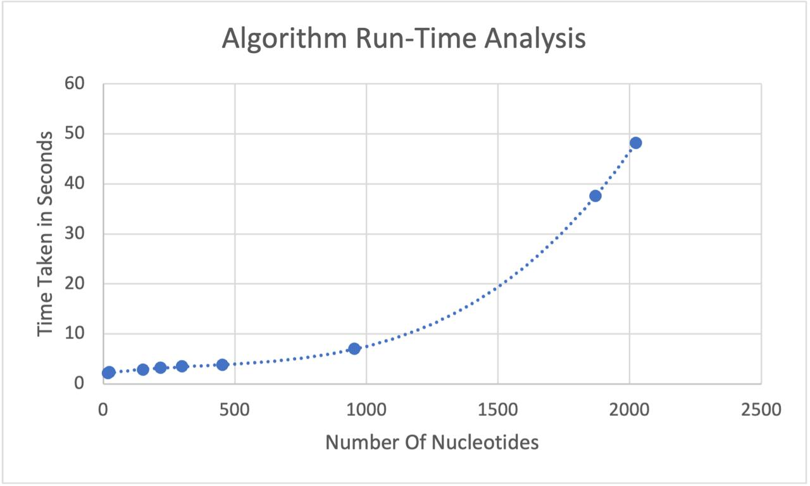

RNA Comparison
| Serial No. |
RNA Name |
Number of Pairs (Algorithm) |
Actual Number of Pairs |
| 1 |
SAM |
32 |
34 |
| 2 |
MTR-RNR1 |
173 |
330 |
| 3 |
HUMAN RNU12 |
42 |
51 |
| 4 |
RN7SL1 |
120 |
106 |
| 5 |
HUMAN HSALNT0402714 |
102 |
739 |
| 6 |
HUMAN TERC |
96 |
163 |
| 7 |
RN18S |
470 |
680 |
| 8 |
HUMAN SNORD3A |
63 |
75 |
Predicted Outcome from the Algorithm
1. SAM: (.(....((.(.(..(((((.(........))....).)))(....))..))).(((.....)(...(.(....(((((((.........)))))(.(.(.(.((.(.(....))).)))..).....))...)....)....).).).)....).
2. MT-RNR1:
(.(((((((((((.(((((((((((((((.(.((.(((((.((((((.(((..(..((((.(((...(((.((((.(..(.((..((.....))).))..))))((.((.(.(((((((((....))).).)......))))))).).)))))).....))))))..).)))))).).))).)).).)))(((((....))))))))))(((((..(((((....))))(((((((((((((((.((....)))).)))..))(((.(((..(((....))..).)).)))))((((.((((((((.(.....)....).)....)))((((((....))))).)))))..))).).))))).)))..))).))).)))))(((.(((((....).).)).)).))...)))).)))).))))(((((.....).))).)))))(.((.(((((...(((((.(((((...(....))).))).).)(((((((((((.(((((.(((((((....).)).)..).))).)...)).).))((((....).))))..)))))))((.(..((((((((..((((.(((((((((((((((((.(.(.(.(.(((((....)((((.((.....)).)))))).)).)).))).))..)))((((.((((....))))..))).))))))..)....)))))))..)(((((.((((((((((((((.....)))))).)..).)))))))).)....)))..)))((((.((.((.(((((((.(...(((....)))).))))(((((.((.((((...(((.(((.((....)))))...))))))((((.(((....))).)..)))..)))))))))))))))).)).)))))))))))))))(((.((....)).)).)(((((.(((....))).))))))).).)))
3. HUMAN RNU12:
(.((((((((((((....)))).((..(..(((((((((....).)).)))))((((((....).)))))..)).)))))(((.(((.(....)).))))))))).(((((((.......))))).).)))((((((....).)).))).
4. HUMAN RN7SL1:
((.(((((((....))))(.((.((((((((((((.(....))).)))(((((((((((((.(((.((.((((.....))))((((.(.((((((((((.((.(....))).))).)).)..)).)))))(.((((((.((.((((....)))))).).))))..)))))))))))(((((((.(((.(((.(.(....).))).)).)))))...).)))(((((.((((..((.((.....).))).))).)))).))).).)))))))))))..).).)).)).))))).).)...
5. HUMAN HSALN50402714:
(((((((....).(((.((((((((((.(....)))).))).)((.((((((..(((((.....)).))).)))).)))((((((((((.((((.((....))((((.(((....)))))))(((((.(..(((.(((((((((((..(((.((..(.(((((((((.((((.(((((((.((((((((((((((.(.((.((((((((..((((..(((.((.(.((.(((....)).)))..))))))).)))))))(((((((((.((((((....).)))))).)...)))((((((.((((....))))..)))))((((((((((.....)).).)))(.(((.((((.((((((((((..(.((.(..(((.(((....))).)).))).)))).)))).).)))).))))((((.((((.(.((....)))))).((((.((((.(....)))))))))))..)))..)))))))))).).).))).)))))((.(((((.(((((.((((.(.....).)(.((((((.((((((((((((((.(((.(((((.((.(((((((....)..))).)((....))))))).))))))..)))))(((....)).)))(((((.(((..((((((.((((((((....)))(((.((((((((.((((....))(((((((.(.(((((.((((((((.((((((((((((.((....)).)))).)).))..(....).)).)))).)))).((((((((((..((..(((((((((((((.((((.(((((((((((((((.(((.((.((.....).))))))))((((....)).)(.((((((.(((((((((.(....))))).)))(((.(.((((.((.((((((((((..((....)).))(....))))))))).))))...))...))).)))..).).))))).))..).))))))))...)))).))((((((.(....))).))))).))((....))))..))..).)).)))))).))).)..).))(((....)).))))))..))))))))))..))((((((((.((.....)(((((.....)).).)))))))).)))))))).)))))(((((..((((((((..(.((((....)))))))))))))))))).))))))..))...).)).)))))))).)).))))).(((((((((.(.(.((((((((.((.....))))((((.(((....))))...))).))))))))))(((....)..))))).))))))).).).)))((((.(((((.(((....)).).)))))))))))))))))).)((((.((.((....)..))))))))))))))..))).)))))..))))..)(((((.((((..(.(...(((.(.((((.((((((((((((....).))))))(((((.(((((((((((....)).)..)(((((((.(((((((((.((((......)).)).))))).))).).)))))))))))))))(((.(((((.(((((.(((((((((.(((.(((((((..((.(.(((((((.((((..(((....))))).).))))).).))))))))))...))))))))))(((....)))))(((((.....))))))).).))).)))).)).)(((((....)).).).))))).)((....)))..))))))))))))))))))))(((..((((((....)).).)).))).))).))))..)))...)))).)))))).))))(.(((.((((((.((.(.((((....).).).))).)).).)).)))..)))))))))).)))).).).)))(.((.(((((((((..(.(((((((....))))))))))))))))))).)).)...)))))))))))))..))))).)..).)))))))))).))))))).((((((....))))(((.((.(....)))))))))
6. HUMAN TERC:
(((((.(((.(((((((((.((((((((.((.(((((((((((((((((...((((((.(((((((..(((((..(.((((((.(.(((((((((..(.....).)))((.....))))))).))))))))).)).)))))).).)))))..))).)))..))).)))).)))...)(.(....)).)))))...).)))))))))((((((....).)..)).)).))))).)))))))))))((..(((((((((....))))(((((....)(((((.(((((((((.((.(((((((((((.....)))).)).))(((....(.((((....)))))))).)))(((((((((((.(....).).)).)))((((((.....))((((....))).))).)))).))))).)))))...))).))).)))).)))))).)))..).
7. RN18S:
...(..((((((((((.(((((.(.(((.(((..((((..(.((((.((((.(((((..(.(((((.(((((.((((((((.(((((((((((((((((((((((.((((((..((..(((((.((((.((((((.((((((((....))..))((.(.(((((....)).(.(.(((.(((((.(.(.((((((((.....))))))(((((....)))(((((((((((...(((((((((.(..(.(((.((((((....))))))))..)).).)))).)..))))))).))).))))))))))).))).)))))(((((((((((((((((((.(((.((.((((.((.((......)))))).))))))).)))))))(.(..((....))))))))))).)..))(.(((((....).)))))))))))((((((((....)..)))).)).)))))).)))))).))))).))).))))((.(((((((((.....))).)).).).)..))))))))))..))((((.(((....))).)).)))..))..)))))).)))(((((((((((......)))(.(((((((((((.(((.(.((((....)).))))..)..).))..))))))).).)))).)))))))).).))))))(((((((.(......))..)))(((.((((((((((((((((((....)))).)..)))))))).))).)))))))((.(.((((.((((((((.(.((.....)))))(....).).)))))))))))).)).)))((.((....))).)))((((((((((((...((.((((((..((((((((.((((((((((...(((((.((....)).)))))))((((((((((((..(....)))..))..)).)((((((.((((((((((((((.(((((((((....)((.((....))..)))))))))).))).)(((((((((((.(((((....).)))))))(((..(((((((((((...(.(((((((.((((.((((.(.(....))))))..))).))))((((.((..((((((....).).))))..)))))))))((((((((.((((((.((..((((.((.((((....)).)).)))))))((((((.((((((.(..((..(((.(((((....))(.((.(.((.(.((((.....)))))))).)).)).)))))).)))))).)...)).).)).)))).)))))((((((((((.(...(.((((....)..))))))).).).)))))..))).).).))))))))))))).((......).)))))))((.(.(((.(....))))))))))...)))))).))(((((....))).))).)))))((....)))))))))))))))(((((((.((((.(((((((((.(((((.((.((.((((.(((.((.((....))).)))))...).)).)).))))))).)))).)((.(((((((.....))))..))))).(((((.(((((....))))))))))))...((((((((((....)(((....))))))).)).))))).).)))).).)).))..))))))...)).)))))).).))).)...)))((....))))))))))..)))).).)))))))).)))).))))))..)).).)))))).)(.(.(((((.(((..((....)))))))).)..))))((.(((....)).))))))))))))(((((((.(((.(((.((....).))))))..)))).)(.(....)))))))).).).)))))..).))))))..))
8. HUMAN SNORD3A:
((..(((.((...(.((((((((..(.(.(.((.(((.(.(((((....))))))))(.((.((.(((((((((.(((.(((.((.(.((....).))))))).)(.((.....))))).)))).)).(((((......))))))))).)))))))))))))))).(((((((((((.(.......)).)))))..).))))).)))).).)))..)
RNA Comparison Analysis
Our algorithm's performance in predicting RNA secondary structures has been assessed against actual biological RNA structures. The results indicate a tendency for our model to predict a higher number of base pairs. This overestimation could stem from the algorithm's design, which prioritizes the maximization of base pairing without considering biological constraints that prevent certain formations.
In several instances, our predictions closely approximate the actual pair counts, demonstrating the potential utility of the algorithm in initial structural estimation. However, the algorithm does not account for complex structures like pseudoknots, which are prevalent in natural RNA formations.
One of the algorithm's design features is its avoidance of 'kinks' in the RNA structure by maintaining a gap of at least four bases between pairs. This reflects the biological reality to some extent as natural RNA molecules often have hairpin loops with a small number of unpaired nucleotides that create a physical separation between paired regions. While very small loops are less common due to steric constraints, loops of three to four nucleotides are energetically favorable and frequently observed in nature.
